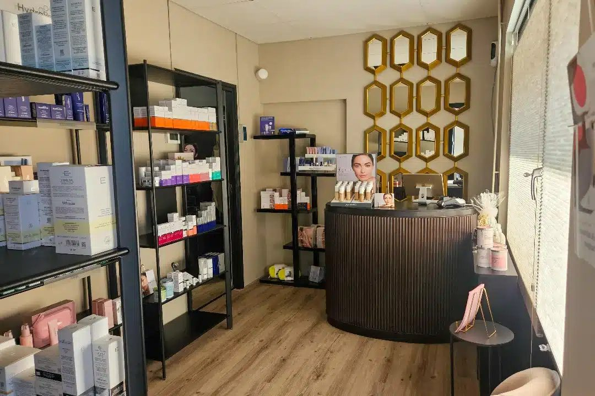

Kies nu je gewenste datum en tijd.
"Ik kijk altijd uit naar de heerlijke gezichtsmassages en de resultaten die ik in de spiegel zie na zo'n peptidenbehandeling. Echt een aanrader!"
— M. uit Apeldoorn"Altijd kundig, geduldig, meedenken en liefdevol. Ergens anders zijn ze niet zo goed met mijn huid omgegaan. Jolanda heeft dit met haar kunde en kennis weer opgeknapt."
— Patty"Jolanda en Naomi zijn vakkundig en kijken echt naar wat je huid nodig heeft. En daarnaast zijn ze ook nog eens heel gezellig!"
— P. uit ApeldoornContact & locatie
